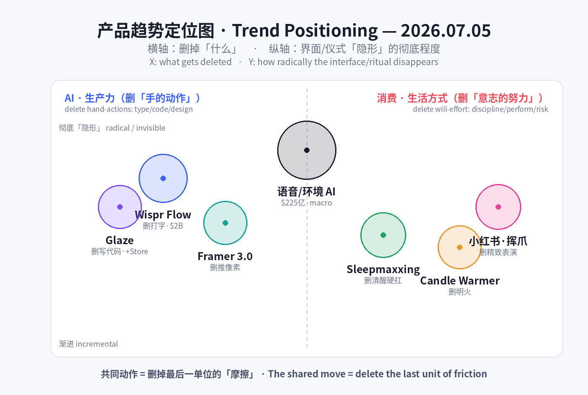
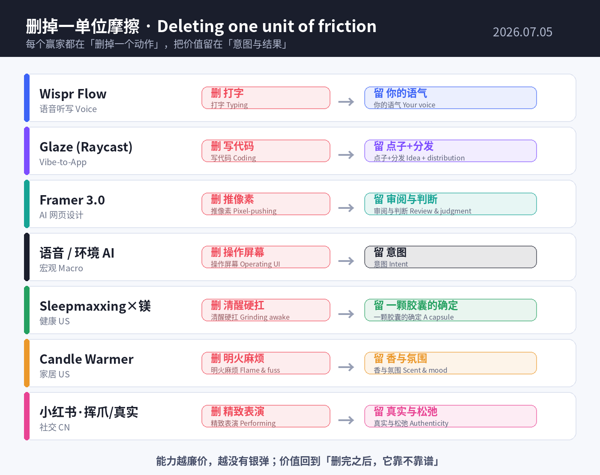

数据来源 / Sources: Wispr Flow（Bloomberg 融资报道、G2/Trustpilot/App Store 评价、PitchBook/Tracxn）、Glaze by Raycast（Raycast Blog、Product Hunt、AlternativeTo）、Framer 3.0（Framer Blog/Help、多篇 2026 评测）、Sensor Tower《State of AI 2026》、a16z《Big Ideas 2026》、语音 AI 市场报告（Ringly / Fortune Business Insights / Mordor）、Sleepmaxxing × 镁（Future Market Insights、SleepyDeepy、Slumber）、蜡烛暖灯 / 香薰蜡（GMInsights、Grand View、Taste of Home、TikTok #CandleWarmer）、小红书（知乎、TopMarketing、新榜、人人都是产品经理）。 方法 / Method: WebSearch（US-only）+ 公开检索摘要。Product Hunt / X / LinkedIn / 小红书 / Sensor Tower 多为登录墙或客户端渲染，采用公开新闻、榜单、市场报告与新闻稿替代；无法获取的页面已跳过。为保证每日新意，已排除 6/29–7/04 已深度分析过的产品（Isaac 1、Adam CAD、Tabstack、Humalike、Cursor for iOS、Z-Jail、BrowserAct、Sibyl、fibermaxxing、胶原蛋白、穿戴甲、奶油黄、Summerween、Owala、果醋、黑芝麻、blokecore 等）。 免责声明 / Disclaimer: 本报告为趋势研究，非投资建议。融资 / 估值 / 市场规模 / 份额为第三方公开披露或估算，可能随时变化；量化「浏览量 / 帖子数」为平台口径，仅供参考。
一句话 / In one line： 如果说这一周 AI 忙着长出「手、脑、老板、身体」，那么今天的信号收敛成同一个更狠的动作——把「操作」本身删掉。 Wispr Flow 靠「不用打字，说就行」冲到 ~$20 亿估值；Raycast 的 Glaze 靠「不用写代码，说一句就生出一个 Mac 原生 App」；Framer 3.0 把网页设计交给画布上的 agent，你只需要「审阅、合并」。而消费端在做同一件事的镜像——把「努力」从体验里删掉：抗衰卷不动了就去卷睡觉（sleepmaxxing + 镁），点蜡烛嫌麻烦嫌危险就换成暖灯烤香（candle warmer），连社交都从「精致表演」退回到「一只黄猫爪 + 放飞真实」。
In one line: If this week AI grew hands, a brain, a boss, and a body, today's signals converge on one sharper move: deleting the act of "operating" itself. Wispr Flow rides "don't type, just talk" to a ~$2B valuation; Raycast's Glaze turns "don't code, just describe" into a real native Mac app; Framer 3.0 hands web design to agents on the canvas and leaves you only "review & merge." The consumer side mirrors the exact same move — deleting effort from the experience: anti-aging is saturated, so optimization migrates to sleep (sleepmaxxing + magnesium); lighting a candle is fussy and risky, so it becomes a flameless warmer; and even socializing retreats from polished performance to a yellow cat paw + "authentic and unbothered."
两条线其实是同一件事：删掉最后一单位的「摩擦」。 过去十年产品竞争的是「能不能做到」，接着是「做得好不好」；到 2026 年，能力已经廉价泛滥，胜负手移到了「你还要用户付出多少动作」——一次键入、一行代码、一根火柴、一份「必须体面」的压力。谁把这最后一步删得最干净、又能在现实里跑得稳，谁就赢。
These two lines are the same thing: deleting the last unit of friction. For a decade products competed on "can it be done," then "is it done well." By 2026 capability is cheap and everywhere, so the contest shifts to "how much action do you still demand from the user" — one keystroke, one line of code, one lit match, one ounce of "must look put-together." Whoever deletes that last step most cleanly — and still holds up in the real world — wins.
也正因此，今天最锋利的信号都自带「诚实的裂缝」：Wispr 一边冲 $2B、一边扛着 Trustpilot 2.7 分和「付费后就变差」的信任落差；镁助眠是「S 级网红补剂」，可 2026 年一篇《European Journal of Nutrition》研究直接说「对睡眠无显著作用」。删掉摩擦很性感，但删不掉的是「最后一公里的可信度」——这恰恰是这一天所有赢家真正的护城河与软肋。
That's why today's sharpest signals all carry an honest crack: Wispr chases $2B while carrying a Trustpilot 2.7/5 and a "degrades after you pay" trust gap; magnesium is the "S-tier" sleep supplement, yet a 2026 European Journal of Nutrition study flatly reports "no notable effect on sleep." Deleting friction is sexy; what you can't delete is last-mile credibility — which is precisely the moat, and the soft spot, of every winner today.


五条最强信号 / Five strongest signals
Five signals (EN): (1) Wispr Flow — voice dictation in talks at ~$2B (Menlo ~$260M), 270 Fortune 500 users, yet Trustpilot 2.7/5. (2) Glaze by Raycast — prompt-to-native-Mac-app + a Glaze Store for one-click distribution. (3) Framer 3.0 — Agents on the canvas + Branching, editor seat halved $40→$20, 500 free credits/day. (4) Sleepmaxxing × magnesium — 125M+ posts, sleep-supplement market $9.94B→$26.36B, evidence split. (5) Candle warmers — #CandleWarmer 100M+ views, market $4.4B→$8.3B; flame deleted, scent + wellness kept.
当日最重的一枪来自一个看起来「不起眼」的品类：语音听写。Wispr Flow 让你对着任何应用自然地说话，它替你按你的写作风格转成文字，自带轻度润色（auto-edits）、命令模式（command mode）、100+ 语言，覆盖 Mac / Windows / iOS。2026 年 5 月，Wispr 谈到约 $2B 估值、Menlo Ventures 领投约 $260M——比半年前的 $700M 估值几乎翻了近三倍，累计融资约 $290M。它的增长故事很硬：进了 270 家世界 500 强（含英伟达、亚马逊），估算年收入约 $1000 万。但它也带着 2026 年最典型的「诚实裂缝」：iOS 4.8 分（8500+ 评价）与 Trustpilot 2.7 分并存，用户最集中的抱怨是「免费试用很好、付费后就变差」（有人说「只有 60% 的时候能用」）、内存 / CPU 占用偏高、以及早期隐私措辞引发的担忧。它精准踩中了 2026 的主线：当打字成为「多余的动作」，删掉它就是价值——但语音的护城河不是识别率，而是信任。
The day's heaviest shot comes from an unglamorous category: voice dictation. Wispr Flow lets you speak naturally into any app and writes it back in your own style — with light auto-edits, a command mode, 100+ languages, across Mac/Windows/iOS. In May 2026 Wispr was in talks at ~$2B, led by Menlo Ventures (~$260M) — nearly 3x the $700M valuation set six months earlier, ~$290M raised in total. The growth story is real: 270 Fortune 500 customers (incl. Nvidia, Amazon), ~$10M estimated ARR. But it carries the era's signature honest crack: an iOS 4.8/5 (8,500+) alongside a Trustpilot 2.7/5, with the loudest complaint being "great on trial, degrades after you pay" (some report "works 60% of the time"), heavy RAM/CPU, and early privacy wording. It nails the 2026 throughline: when typing becomes a redundant action, deleting it is the value — but voice's moat isn't accuracy, it's trust.
| 维度 Dimension | 分析 Analysis |
|---|---|
| 商业模式 Business model | 订阅 SaaS，Pro ~$15/月 + 免费层；靠企业侧「说话即写作」的效率叙事做 land-and-expand（270 家 F500）。Subscription SaaS + free tier; enterprise efficiency land-and-expand. |
| 核心功能 Core value | 全应用语音听写 + 按你风格润色、命令模式、100+ 语言——把「打字」从工作流里删掉。Voice-to-text everywhere, style-aware, 100+ languages. |
| 成功因素 Success factors | 品类时机（语音 AI 成熟）+ 企业留存 + 「隐形嵌入所有 App」的分发；估值靠采用速度而非收入。Timing + enterprise retention + ubiquity of insertion. |
| 细分市场 Niche | 生产力 / 输入层 AI（不是通用聊天，也不是客服语音 agent）。Productivity / input-layer voice AI. |
| 目标受众 Audience | 知识工作者、开发者、多语写作者、重度信息输出者、企业团队。Knowledge workers, devs, multilingual writers, enterprise teams. |
| 品牌设计 Brand | 「Flow」= 心流 / 顺滑无摩擦；极简菜单栏体验，主打「隐形、不打断」。"Flow" = frictionless; invisible, non-interrupting menu-bar UX. |
| 产品数据 Data | ~$2B 估值谈判中（2026/5，Menlo ~$260M）；累计 ~$290M；270 家 F500；iOS 4.8（8500+）vs Trustpilot 2.7；~$15/月。 |
| 链接 Link | wisprflow.ai · Bloomberg 报道 · G2 评价 |
| 评论摘要 Reviews | 正面：「润色克制、保留我的语气」「多语处理好」；质疑：「付费后变差、只有 60% 能用」「内存占用大、卡 VS Code」「隐私措辞吓人」。Praise for subtle cleanup & multilingual; skepticism on post-paywall reliability, resource use, privacy. |
如果 Wispr 删掉的是「打字」，Glaze 删掉的是「写代码」这件事本身。 这是效率工具明星 Raycast 推出的新平台：你用一句话描述想要什么，Glaze 就给你生成一个真正的本地原生 Mac App——即点即开、离线可用、拥有完整的系统权限（文件系统、菜单栏、键盘快捷键、后台进程），而不是一个跑在浏览器标签里的网页。更关键的是它配了Glaze Store：你把自己「氛围编程（vibe code）」出来的小工具一键发布，别人一键安装。这一步把 2025 年那股「人人都能 vibe code」的热潮，从「玩具 demo」推进到了「有分发、有生态、能留存」的产品形态。Glaze 于 2026 年 3 月 4 日首发，7 月 1 日更新并直接嵌进 Raycast 启动器，付费版约 $20/月。它精准延续主线：当写代码变成「多余的动作」，价值就从「会不会写」转移到「谁把生成→分发→安装这条链路做得最顺」。
If Wispr deletes typing, Glaze deletes coding itself. From productivity darling Raycast, Glaze lets you describe what you want in a sentence and generates a real, local, native Mac app — instant-launch, offline-capable, with full OS access (file system, menu bar, keyboard shortcuts, background processes), not a browser tab. Crucially, it ships with a Glaze Store: publish your vibe-coded tools with one click, and others install them with one click. That step pushes 2025's "anyone can vibe-code" energy from toy demos into a product shape with distribution, an ecosystem, and retention. Glaze debuted March 4, 2026, updated July 1, 2026 and baked into the Raycast launcher, ~$20/mo. It extends the throughline precisely: when writing code becomes a redundant action, value moves from "can you code" to "who makes generate → distribute → install the smoothest."
| 维度 Dimension | 分析 Analysis |
|---|---|
| 商业模式 Business model | 订阅（~$20/月），嫁接 Raycast 既有装机量分发；Glaze Store 埋下平台 / 抽成想象空间。Subscription atop Raycast's installed base; a store hints at platform economics. |
| 核心功能 Core value | 自然语言 → 本地原生 Mac App（离线、全系统权限）+ 一键发布 / 安装的应用商店。Prompt-to-native-app + one-click store. |
| 成功因素 Success factors | 「vibe code」情绪红利 + Raycast 的分发与信任 + 「本地优先」差异化（非网页壳）。Vibe-code moment + Raycast distribution + local-first differentiation. |
| 细分市场 Niche | 个人软件 / 长尾工具的「AI 生成 + 分发」层（介于 no-code 与 IDE 之间）。The generate-and-distribute layer for personal software. |
| 目标受众 Audience | Raycast 重度用户、开发者、power user、想「自己造工具」的非工程师。Raycast power users, devs, tool-tinkerers. |
| 品牌设计 Brand | 「Glaze」= 给 vibe code 上一层「釉」（打磨成品）；延续 Raycast 极客克制的设计语言。"Glaze" = a finished coat over raw vibe code. |
| 产品数据 Data | 首发 2026/3/4；2026/7/1 更新并嵌入启动器；付费 ~$20/月；本周登上 Product Hunt。 |
| 链接 Link | raycast.com/blog/introducing-glaze · Product Hunt · AlternativeTo |
| 评论摘要 Reviews | 正面：「终于把 vibe code 变成能用、能分享的东西」「本地优先、离线、有系统权限」；质疑：「生成质量 / 安全审核如何保证」「会不会又是一堆一次性小玩具」。Praise for turning vibe-code shareable & local-first; questions on quality/security review and disposable-app glut. |
Framer 3.0（2026 年 6 月 16 日上线）是「删掉操作」在创作工具里的样板。它把 AI Agents 直接放到设计画布上：从零或从一张截图生成页面、搭建版式与分区、处理响应式断点、加效果与交互；还能写文案、生成 SEO 元数据。配套的 Branching（分支） 让你和 agent 在副本上自由试，满意了再合并回主站——这解决了「AI 直接改线上站」的最大恐惧。商业设计极其锋利：编辑席位从 $40 腰斩到 $20、内容编辑席 $10，同时推出 AI 积分制——免费用户每天送 500 积分（约 2 个落地页），Basic 1000/月、Pro 3000/月，一个完整落地页约 300 积分。「让 AI 免费白嫖」不再是成本黑洞，而是被设计成拉新与转化的增长飞轮。 它对应主线的方式最直白：设计师从「推像素」升级为「审阅与合并」——操作被删掉，判断被保留。
Framer 3.0 (launched June 16, 2026) is the template for "delete the operation" inside a creative tool. It puts AI Agents directly on the design canvas: generate pages from scratch or a screenshot, build layouts and sections, handle responsive breakpoints, add effects and interactions — plus draft copy and SEO metadata. The paired Branching lets you and your agents experiment on a copy, then merge to the live site only when satisfied — defusing the biggest fear of "AI editing production." The business design is razor-sharp: editor seats halved from $40 to $20, content-editor seats $10, and a new AI-credits model — Free users get 500 credits/day (~2 landing pages), Basic 1,000/mo, Pro 3,000/mo, a full landing page ~300 credits. "Let AI run for free" becomes not a cost sink but a growth flywheel for acquisition and conversion. Its throughline is the bluntest of all: designers move from "pushing pixels" to "review & merge" — the operation is deleted, the judgment is kept.
| 维度 Dimension | 分析 Analysis |
|---|---|
| 商业模式 Business model | 订阅 + AI 积分（免费 500/天，Basic ~$10 / Pro ~$30 / Scale ~$100）；席位降价换取更大装机与用量。Subscription + AI credits; cut seat price to expand usage. |
| 核心功能 Core value | 画布上的设计 agent（生成 / 改版 / 响应式 / 文案 / SEO）+ Branching 安全试验后合并。Agents-on-canvas + safe branching/merge. |
| 成功因素 Success factors | 把「AI 免费额度」变成增长引擎 + Branching 解决信任 + 既有创作者生态。Free-credits-as-growth + trust via branching + existing base. |
| 细分市场 Niche | 无代码 / 可视化网页设计的 AI-native 化（对标 Webflow、v0、Wix AI）。AI-native visual web design. |
| 目标受众 Audience | 设计师、独立创作者、营销 / 增长团队、中小企业建站。Designers, solo creators, marketing/growth teams, SMBs. |
| 品牌设计 Brand | 「画布优先（bet on the canvas）」的定位；克制的产品美学 + 「先分支后合并」的安全叙事。Canvas-first positioning; safety-first narrative. |
| 产品数据 Data | 2026/6/16 上线；席位 $40→$20；免费 500 积分/天；落地页 ~300 积分；Basic ~$10 / Pro ~$30。 |
| 链接 Link | framer.com/agents · Framer Blog · 积分说明 |
| 评论摘要 Reviews | 正面：「Branching 终于让 AI 改站不吓人」「席位腰斩很香」；质疑：「积分制换算复杂、大项目烧得快」「生成页仍需人工精修」。Praise for branching & cheaper seats; gripes on credit math and polish. |
Wispr 的 $2B 不是孤例，而是一个结构性拐点的水花。把镜头拉远：2026 年语音 AI 市场约 $225 亿（语音识别 $225 亿、语音生成 $77 亿），各细分 CAGR 普遍 20–35%（语音 agent 34.8%、语音生成 30.7%），语音识别 2034 年将破 $1000 亿。与此同时 Sensor Tower《State of AI 2026》给出需求侧证据：生成式 AI 应用的全球使用时长从 17.2 亿小时（H1'25）翻倍到 36 亿小时（H1'26），AI 应用上半年下载破百亿、内购收入超 $40 亿；ChatGPT 用 3 年成为史上最快破 10 亿月活的 App。而 a16z《Big Ideas 2026》把这股力量命名为「the year of me」——产品从「大规模生产」转向「为你而造」。共同结论：交互正在从「你去操作屏幕」滑向「你直接表达意图」——键盘、代码、点按都在被语音、prompt、agent 一层层抽走。
Wispr's $2B isn't a one-off — it's the splash of a structural inflection. Zoom out: the 2026 voice-AI market is ~$22.5B (voice recognition $22.5B, voice generation $7.7B), with segment CAGRs mostly 20–35% (voice agents 34.8%, voice generation 30.7%) and speech/voice recognition crossing $100B by 2034. On the demand side, Sensor Tower's State of AI 2026 shows generative-AI app time spent doubling from 17.2B hours (H1'25) to 36B hours (H1'26), AI apps past 10B downloads and $4B in-app revenue in H1, and ChatGPT becoming the fastest app ever to 1B MAU (3 years). a16z's Big Ideas 2026 names the force "the year of me" — products shifting from mass-production to "made for you." The shared conclusion: interaction is sliding from "you operate the screen" to "you express intent" — keyboard, code, and taps are being peeled away by voice, prompts, and agents.
| 维度 Dimension | 分析 Analysis |
|---|---|
| 趋势本质 Essence | 界面「隐形化」：输入从「手操作」转向「意图表达」（说 / 描述 / 委派）。The interface goes invisible; input shifts from action to intent. |
| 量化信号 Data | 语音 AI ~$225 亿(2026)、CAGR 20–35%；GenAI 时长 17.2 亿→36 亿小时；AI 应用 10B 下载 / $4B 内购（H1'26）。 |
| 谁受益 Who wins | 输入 / 分发层（Wispr、Raycast、Framer）、语音 agent、个性化引擎；「为你而造」的 AI-native 商业模式。Input/distribution layers & personalization. |
| 风险 Risks | 信任与隐私（语音随时在听）、可靠性、以及「无界面」下的可发现性与可控性。Trust, privacy, reliability, discoverability. |
| 链接 Link | Sensor Tower State of AI 2026 · a16z Big Ideas 2026 · Voice AI 统计 |
消费端的第一个镜像：当「清醒时的自律」已经卷到头（补纤维、喝水、抗衰），下一个战场是你睡着的 8 小时。 Sleepmaxxing（睡眠最大化）成为 2026 最大睡眠趋势，社媒帖子 1.25 亿+——把睡眠的每个可控变量（环境、时间、补剂、工具、作息）都优化到极致。其中镁（尤其甘氨酸镁）被封为「S 级助眠补剂」：生物利用度是氧化镁的 4 倍，睡前 30–60 分钟 200–400mg。市场随之膨胀：助眠补剂 $99.4 亿(2026)→$263.6 亿(2035)，CAGR 10.2%，褪黑素占 36.7%。但这里的「诚实裂缝」尤其大——循证是分裂的：2025 年 Lopresti RCT 说有效，2026 年《European Journal of Nutrition》却说「对睡眠无显著作用」。这正是「删掉努力」叙事的悖论：把优化外包给一颗胶囊很爽，但疗效的最后一公里，科学还没兜住。
The consumer side's first mirror: once "waking-hours discipline" is maxed out (fiber, hydration, anti-aging), the next battlefield is the 8 hours you're asleep. Sleepmaxxing is 2026's biggest sleep trend with 125M+ social posts — optimizing every controllable variable (environment, timing, supplements, tools, routine). At its center, magnesium (especially glycinate) is crowned the "S-tier" sleep supplement: up to 4x the bioavailability of oxide, 200–400mg 30–60 min before bed. The market balloons: sleep supplements $9.94B (2026) → $26.36B (2035), 10.2% CAGR, melatonin at 36.7% share. But the honest crack is wide — the evidence is split: a 2025 Lopresti RCT says it works; a 2026 European Journal of Nutrition study says "no notable effect on sleep." That's the paradox of the "delete the effort" narrative: outsourcing optimization to a capsule feels great, but the efficacy last-mile isn't scientifically nailed down.
| 维度 Dimension | 分析 Analysis |
|---|---|
| 商业模式 Business model | DTC 补剂 + 订阅复购 + 达人种草；「符号化补剂」（镁 = 会睡觉的人设）驱动溢价。DTC supplements + subscription + influencer; symbol-driven premium. |
| 核心功能 Core value | 「一颗胶囊换更好睡眠」的低门槛优化；甘氨酸镁的高生物利用度叙事。Low-effort sleep optimization in a capsule. |
| 成功因素 Success factors | 蹭「自律 / 优化」文化 + 睡眠焦虑刚需 + 社媒可视化（作息、补剂堆叠）。Discipline culture + sleep anxiety + shareable routines. |
| 细分市场 Niche | 功能性睡眠健康（补剂 / 工具 / 环境），从「治疗失眠」转向「优化正常睡眠」。Functional sleep-wellness for the already-healthy. |
| 目标受众 Audience | 追求表现力的年轻专业人士、健身 / 生物黑客人群、焦虑失眠者。Performance-seekers, biohackers, the sleep-anxious. |
| 品牌设计 Brand | 「S 级 / tier list」游戏化话术 + 冷静高级的「临床感」包装。Gamified tier-lists + clinical-calm packaging. |
| 产品数据 Data | Sleepmaxxing 1.25 亿+ 帖；市场 $99.4 亿→$263.6 亿（10.2% CAGR）；褪黑素 36.7% 份额；循证分裂。 |
| 链接 Link | Sleepmaxxing 指南 · 镁与睡眠 · 市场报告 FMI |
| 评论摘要 Reviews | 正面：「入睡更快、半夜不醒」「比褪黑素不上头」；质疑：「安慰剂？」「不同研究结论打架」「剂量 / 形态营销噱头多」。Praise for faster onset; skepticism on placebo & conflicting studies. |
第二个镜像更直白——把「点蜡烛」这件事里的摩擦（明火、危险、烟、麻烦）全删掉，只保留「香」与「氛围」。 蜡烛暖灯（candle warmer lamp）用灯泡的热从上方烤化蜡烛，无需明火即可释放香氛，被当成「更安全、更持久、更好看」的替代品在 TikTok 爆红——#CandleWarmer 播放量破 1 亿。市场随之走强：蜡烛暖灯及配件 $44 亿(2026)→$83 亿(2035)，CAGR 7.4%；香薰蜡烛 $41.3 亿(2026)、香薰蜡（wax melt）市场 $43.5 亿(2026)。增长引擎是三件套：「无明火」的安全去风险化 + 「香薰疗愈 / 减压」的健康叙事 + 极简家居美学的可拍性。 它和 sleepmaxxing 是同一枚硬币——都在把「疗愈 / 优化」做成低门槛、可视觉化、可日常化的仪式，且刻意删掉了原本的「努力」与「风险」。
The second mirror is even blunter — delete the friction of "lighting a candle" (open flame, danger, smoke, fuss) and keep only the scent and the mood. A candle warmer lamp uses a bulb's heat to melt the candle from above, releasing fragrance with no flame — marketed as "safer, longer-lasting, better-looking," and going viral on TikTok with #CandleWarmer past 100M views. The market strengthens: wax warmers & accessories $4.4B (2026) → $8.3B (2035), 7.4% CAGR; scented candles $4.13B (2026), the wax-melt market $4.35B (2026). Three engines: flameless safety (de-risking) + aromatherapy/stress-relief wellness + photogenic minimalist décor. It's the same coin as sleepmaxxing — both turn "wellness/optimization" into a low-effort, visual, everyday ritual, deliberately deleting the original effort and risk.
| 维度 Dimension | 分析 Analysis |
|---|---|
| 商业模式 Business model | 硬件（暖灯）+ 高复购耗材（蜡 / 香薰蜡）的「刀架 + 刀片」模型；DTC + 达人 + 礼品季。Razor-and-blade: lamp + repeat wax refills. |
| 核心功能 Core value | 无明火释放香氛：更安全、更持久、更省蜡；兼当装饰灯。Flameless fragrance: safer, longer, decorative. |
| 成功因素 Success factors | 安全痛点（明火 / 宠物 / 儿童）+ 香薰疗愈叙事 + TikTok 可拍性 + 低客单冲动购买。Safety + wellness + shoppable aesthetics. |
| 细分市场 Niche | 家居香氛 / 氛围健康（介于蜡烛与电子扩香之间的「去风险」形态）。De-risked home-fragrance/ambiance. |
| 目标受众 Audience | 租房 / 有宠物有小孩家庭、家居美学人群、送礼买家、Z 世代与千禧一代。Renters, pet/kid households, décor lovers, gifters. |
| 品牌设计 Brand | 「暖」「治愈」「极简」视觉；复古蘑菇灯 / 磨砂玻璃等可拍造型驱动传播。Warm, cozy, minimalist, photogenic forms. |
| 产品数据 Data | #CandleWarmer 1 亿+ 播放；暖灯及配件 $44 亿→$83 亿（7.4% CAGR）；香薰蜡烛 $41.3 亿；蜡melt $43.5 亿(2026)。 |
| 链接 Link | Taste of Home 评测 · 暖灯市场 GMInsights · 香薰蜡 Grand View |
| 评论摘要 Reviews | 正面：「香得更均匀更久、没有黑烟」「安全、好看、能当夜灯」；质疑：「顶灯烤化不如烧得香」「灯泡 / 蜡配件绑定」。Praise for even/lasting scent & safety; gripes on throw & proprietary refills. |
中国消费端的镜像发生在社交表达本身——从「精致表演」退回到「零努力的真实」。 近期小红书上，用户用黄色猫爪贴纸 + 一个简单的挥手动作创造了新的社交 meme，#meme 话题热度破 7 亿，品牌纷纷下场「挥爪」，用萌系动作完成「零压力」的品牌—用户互动。与此同时，「独居」话题从强调「精致 vlog、仪式感」转向分享「真实、放飞」的生活场景，评论区弥漫「放下体面，享受放飞」的态度。购买决策上，用户先看「肤感 / 质地」等上身体验，成分只是信任背书——「一千句文字不如一张上脸对比图」。品牌打法也随之转变：2026 不再追「爆款破圈」，而是把人群 / 场景 / 需求做到极致精细，越细分、越有价值的赛道越容易拿到精准流量。 这与欧美的 sleepmaxxing / 暖灯是同一逻辑的东方版本——删掉「表演的努力」，把价值落在「真实、低门槛、精准可感」。
China's consumer mirror lands on social expression itself — retreating from polished performance to zero-effort authenticity. On Xiaohongshu, users turned a yellow cat-paw sticker + a simple wave into a social meme (#meme past 700M in heat), and brands rushed to "wave a paw" for pressure-free, cutesy brand-user interaction. Meanwhile the "solo living" topic shifted from "polished vlogs & ritual" to sharing "real, unbothered" life, comments radiating "drop the composure, enjoy living unfiltered." On purchases, users judge "felt experience — texture/skin-feel" first, with ingredients as mere trust-backing — "a single on-skin before/after beats a thousand words." Brand playbooks follow: 2026 stops chasing "viral breakout" and instead maxes out audience/scenario/need granularity — the more niche and valuable the vertical, the more precise the traffic. It's the Eastern version of sleepmaxxing/candle-warmers — delete the effort of performing; put value on the real, the low-friction, the precisely felt.
| 维度 Dimension | 分析 Analysis |
|---|---|
| 商业模式 Business model | 种草 → 转化的内容电商；品牌靠「精细化人群 / 场景」投放，KOC + meme 互动做低成本触达。Content-commerce; hyper-segmented targeting + KOC/meme reach. |
| 核心功能 Core value | 「真实、可感、零压力」的内容与互动；上身对比图 > 成分表。Authentic, felt, pressure-free content; demos over specs. |
| 成功因素 Success factors | 反「精致疲劳」的情绪红利 + 萌系 meme 的病毒性 + 细分赛道的精准流量。Anti-polish fatigue + meme virality + niche precision. |
| 细分市场 Niche | 独居 / 萌系 / 肤感优先等微观人群与场景（弃「大而全」求「小而准」）。Micro-audiences: solo-living, cute-core, feel-first. |
| 目标受众 Audience | 一二线年轻女性、独居人群、Z 世代、反表演的「真实生活」派。Young urban women, solo-dwellers, Gen Z authenticity-seekers. |
| 品牌设计 Brand | 「挥爪」萌系符号 + 放飞 / 松弛感视觉；去滤镜、去仪式、强调「活人感」。Cutesy paw-wave symbol + relaxed, de-filtered "alive" aesthetic. |
| 产品数据 Data | #meme 热度 7 亿+；独居话题从「精致」转「真实」；决策「肤感优先」；策略主打精细化而非破圈。 |
| 链接 Link | 小红书八大趋势（知乎） · 热点解读 TopMarketing · 2026 经营趋势（人人） |
| 评论摘要 Reviews | 正面：「终于不用装精致了」「挥爪太可爱、品牌也接地气」；讨论：「真实也会变成新的表演吗」「精细化 = 流量更卷」。Praise for relief from performing; debate on whether "authenticity" becomes the new performance. |
| 产品 / 趋势 Product | 类型 Type | 商业模式 Model | 核心「删掉了什么」Deleted friction | 目标受众 Audience | 关键数据 Key data | 「诚实的裂缝」Honest crack |
|---|---|---|---|---|---|---|
| Wispr Flow | 语音听写 Voice AI | 订阅 ~$15/月 + 企业 | 打字 Typing | 知识工作者 / 企业 | ~$2B 估值谈判 · 270 家 F500 · iOS 4.8 | 付费后可靠性↓ · Trustpilot 2.7 |
| Glaze (Raycast) | Vibe-to-App 平台 | 订阅 ~$20/月 + 应用店 | 写代码 Coding | Raycast 用户 / 开发者 | 3/4 首发 · 7/1 嵌入启动器 | 生成质量 / 安全审核存疑 |
| Framer 3.0 | AI 网页设计 | 订阅 + AI 积分 | 推像素 Manual design | 设计师 / 营销团队 | 6/16 上线 · 席位 $40→$20 · 500 积分/天 | 积分换算复杂 · 仍需精修 |
| 语音 / 环境 AI Voice/ambient | 宏观趋势 Macro | —（基础设施层） | 「操作屏幕」Operating screens | 全体 AI 用户 | ~$225 亿市场 · GenAI 时长 17.2 亿→36 亿 h | 信任 / 隐私 / 可发现性 |
| Sleepmaxxing × 镁 | 消费·健康 US | DTC 补剂 + 订阅 | 「清醒时努力」的边界 | 表现力人群 / 生物黑客 | 1.25 亿+ 帖 · 市场 $99 亿→$264 亿 | 循证分裂（EJN：无显著作用） |
| Candle Warmer | 消费·家居 US | 刀架 + 刀片（灯 + 蜡） | 明火 / 危险 / 麻烦 | 租房 / 有宠有娃 / 送礼 | #CandleWarmer 1 亿+ · 市场 $44 亿→$83 亿 | 香气「投射」不如燃烧 · 配件绑定 |
| 小红书·挥爪 / 真实 | 消费·社交 CN | 内容电商 / 精细化投放 | 「精致表演」的压力 | 年轻女性 / 独居 / Z 世代 | #meme 7 亿+ · 肤感优先决策 | 「真实」会否变成新表演 |
共性一：2026 的赢家都在「删掉最后一单位的动作」。 Wispr 删打字、Glaze 删写代码、Framer 删推像素；sleepmaxxing 把优化搬进「不用努力的睡眠」、暖灯删掉火焰的麻烦、小红书删掉「必须精致」的表演压力。能力已经廉价，胜负手从「能不能做」变成「你还要用户付出多少动作」。产品的终极形态，是让自己「消失」，只留下用户的意图与结果。
Pattern 1 — 2026's winners delete the last unit of action. Wispr deletes typing, Glaze deletes coding, Framer deletes pixel-pushing; sleepmaxxing moves optimization into effortless sleep, warmers delete the flame's fuss, Xiaohongshu deletes the pressure to perform. Capability is cheap; the contest is "how much action do you still demand?" The end state of a product is to disappear, leaving only intent and outcome.
共性二：删掉摩擦的同时，护城河与软肋都变成了「最后一公里的可信度」。 Wispr 扛着「付费后变差」的信任落差；镁助眠被一篇 2026 研究直接反驳；暖灯被质疑「香气投射不如燃烧」。当所有人都能删掉操作，差异化就回到「删完之后，它到底靠不靠谱」——可靠性、疗效、隐私、真实性，才是真正稀缺的。
Pattern 2 — deleting friction makes "last-mile credibility" both the moat and the soft spot. Wispr carries a "degrades after you pay" trust gap; magnesium is contradicted by a 2026 study; warmers are knocked for weak scent throw. When everyone can delete the operation, differentiation returns to "is it actually trustworthy afterward" — reliability, efficacy, privacy, authenticity are the scarce goods.
共性三：AI 侧「删操作」，消费侧「删努力」，是同一股文化电流的两极。 生产力工具在删「手的动作」（打字 / 代码 / 设计），生活方式在删「意志的动作」（自律 / 表演 / 冒险）。两者共享同一个时代情绪：在一个「什么都能优化」的世界里，人们真正想买的，是「不必亲自费力」的确定感。 谁能把「省力」做得既真诚又可信，谁就同时握住了 B 端与 C 端。
Pattern 3 — "delete the operation" (AI) and "delete the effort" (consumer) are two poles of one cultural current. Productivity tools remove hand-actions (typing/coding/designing); lifestyle removes will-actions (discipline/performance/risk). Both share one mood: in a world where everything is optimizable, what people actually buy is the certainty of "not having to try so hard myself." Make effortlessness both genuine and credible, and you win B2B and B2C at once.
给创业者的一句话 / One line for builders: 不要再问「我的产品能多做一件事」，要问「我能替用户少做哪一个动作，并且让他们相信少做也没问题」。
Stop asking "what more can my product do"; ask "which single action can I remove for the user — and how do I make them trust that removing it is safe."
报告完 · End of report — 2026-07-05 · 自动化每日产品趋势挖掘 / Automated daily product-trend mining.